Menu Ordinateurs¶


Si nous effectuons un clic sur le mode Expert, une fonction est alors ajoutée : “Réveil réseau”
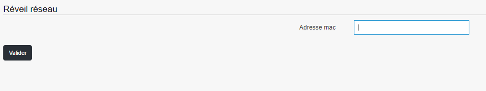
Réveil réseau permet d’allumer une machine en utilisant son adresse MAC.
Nous allons maintenant passer en revue les différentes actions disponibles dans la vue Ordinateurs pour chaque machine :
Icône |
Nom de l’action |
Description de l’action |
|---|---|---|
Inventaire |
Visualiser l’inventaire de la machine |
|
Monitoring |
Récupérer les graphiques de monitoring |
|

|
Sauvegarde |
Visualiser l’inventaire de la machine |
Prise en main à distance |
Prendre la main sur la machine de diverses manières (ssh, rdp,vnc,cmd) |
|

|
Déploiement de logiciels |
Déployer un paquet |
Imaging |
Accéder au menu d’imaging |
|
Actions rapides |
Lancer une action rapide sur une machine |
|

|
Explorateur de fichiers |
Explorer le dossier défini de l’ordinateur |

|
Supprimer |
Supprimer une machine de Pulse |
En mode Expert, on trouvera le menu avec trois fonctions supplémentaires listées ci-dessous :
Icône |
Nom de l’action |
Description de l’action |
|---|---|---|
Visualisation de fichiers |
Visualiser le fichier récupéré sur le serveur |
|
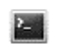 |
Console XMPP |
Permettre certaines commandes directement depuis le serveur ou un ordinateur. |

|
Édition de la configuration des fichiers de l’agent |
Configurer des options des fichiers de configuration de l’agent de l’ordinateur. |
Inventaire¶

Garantie¶
Pour les constructeurs qui offrent une API de gestion de garantie, un lien se forme et pointe directement vers la page du constructeur.
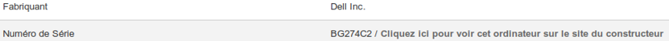
Lien exemple Dell : https://www.dell.com/support/home/fr-fr/product-support/servicetag/0-cksrVUVkKzlCZDF3QmhKRkhjb1RBZz090/overview
# Manufacturer warranty infos
# @@SERIAL@@ keyword will be replaced by computer’s serial
# When type = post, params will be posted, by default params are
# get params for the url.
[manufacturer_dell]
url = http://www.dell.com/support/my-support/us/en/19/product-support/servicetag/@@SERIAL@@/warranty
[manufacturer_dell_fr]
url = http://www.dell.com/support/my-support/fr/en/19/product-support/servicetag/@@SERIAL@@/warranty
params = l=fr
[manufacturer_lenovo]
url = http://support.lenovo.com/templatedata/Web%20Content/JSP/warrantyLookup.jsp
type = post
params = sysSerial=@@SERIAL@@
#[manufacturer_hp]
#url = http://h20566.www2.hp.com/portal/site/hpsc/public/wc/home/
#type = post
#params = serialNumber0=@@SERIAL@@
[manufacturer_fujitsu]
url = http://sali.uk.ts.fujitsu.com/ServiceEntitlement/service.asp
params = command=search&snr=@@SERIAL@@
[manufacturer_toshiba]
url = http://aps2.toshiba-tro.de/unit-details-php/unitdetails.aspx
params = serialNumber=@@SERIAL@@
[manufacturer_apple]
params = serialno=@@SERIAL@@
Monitoring¶

Dans mon cas, je n’ai qu’un item de monitoring
Prise en main à distance¶
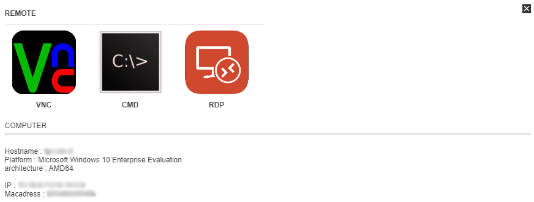
VNC¶
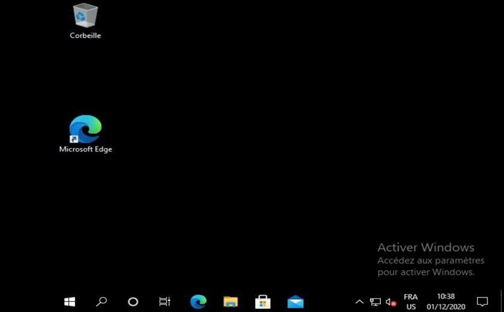
RDP¶
CMD/SSH¶
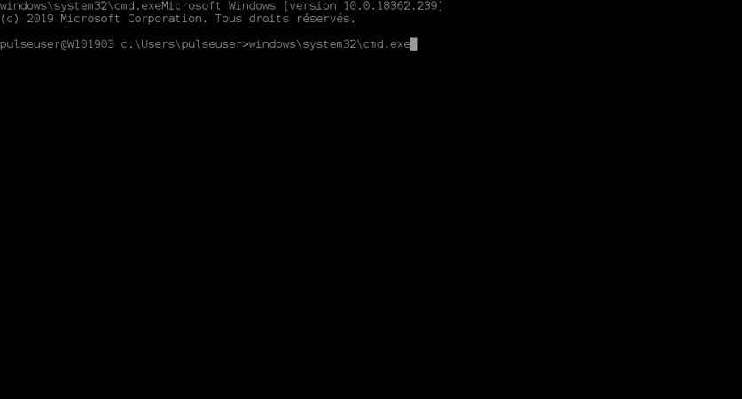
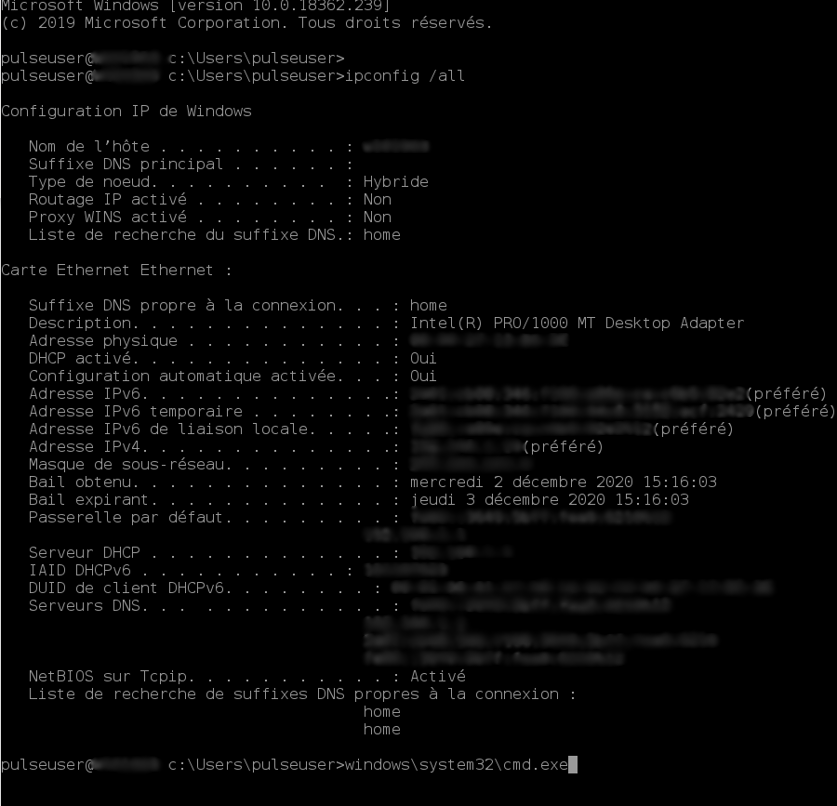
Déploiement de logiciels¶
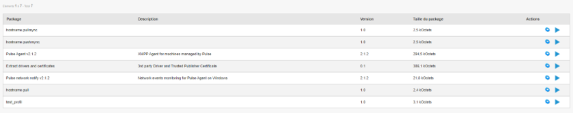
Programmer le déploiement¶
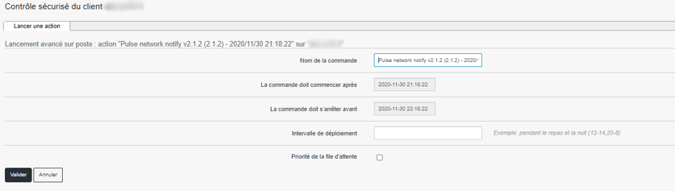
Déployer¶
Les informations concernant le poste sur lequel on déploie la commande et celles concernant le package déployé
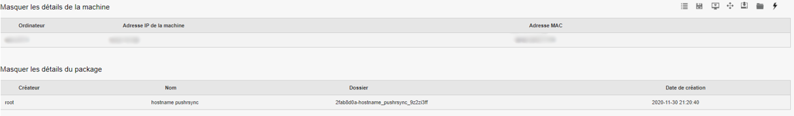
Les informations concernant le serveur relais ainsi que le plan de déploiement qui a été sélectionné
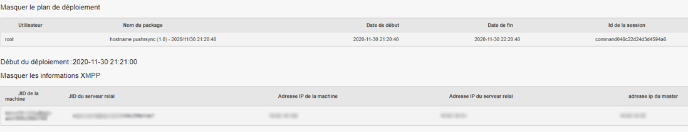
Le package et ses dépendances
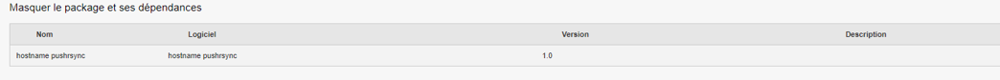
Un résumé des étapes du déploiement
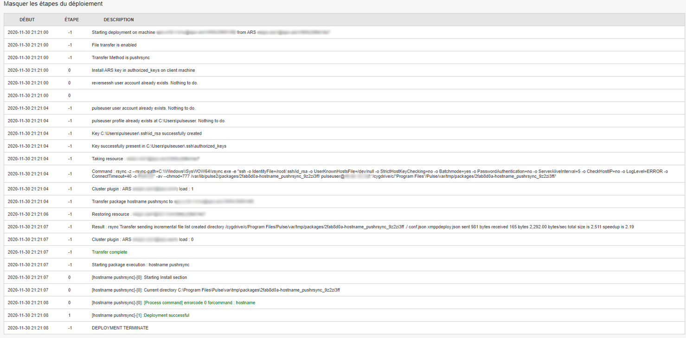
Le résultat du déploiement
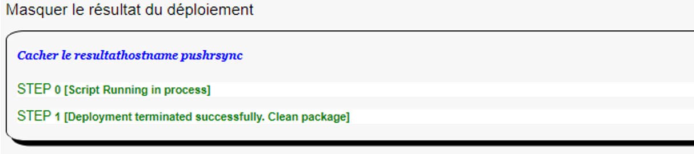
Si l’on clique sur les étapes 0 ou 1, les informations seront plus détaillées sur le retour de chaque étape du déploiement.
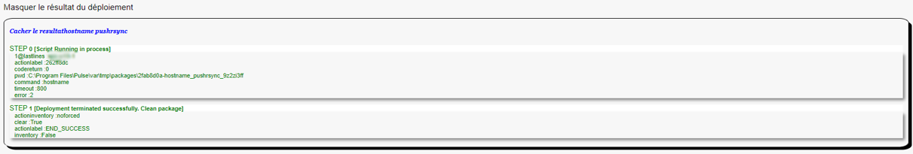
Déploiement avec profil Expert¶
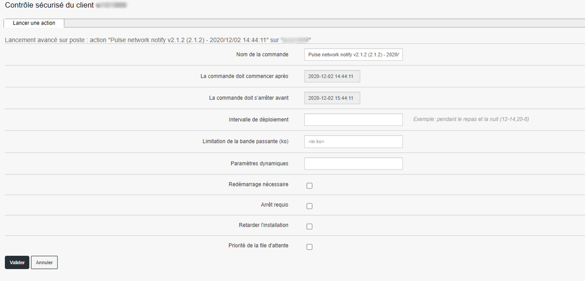
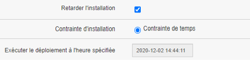
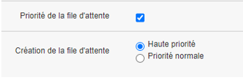
Explorateur de fichiers¶
L’explorateur de fichier permet d’aller sélectionner, sur la machine cliente, un ou plusieurs fichiers (ou dossiers) pour ensuite le ou les télécharger.
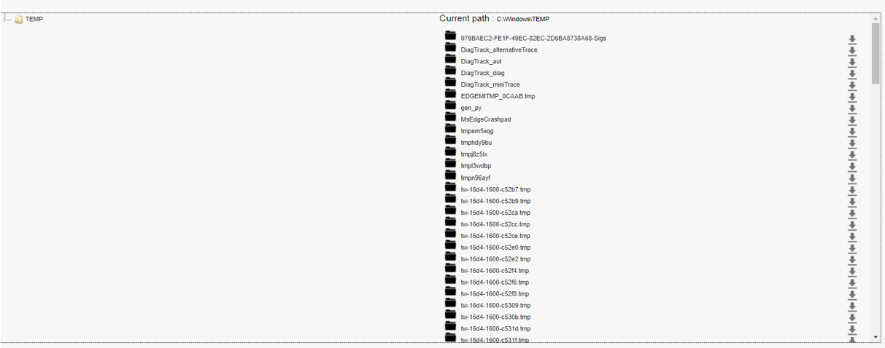
Lorsque l’on clique sur le bouton télécharger, une pop-up va nous demander confirmation du téléchargement en résumant les informations que l’on a sélectionné.
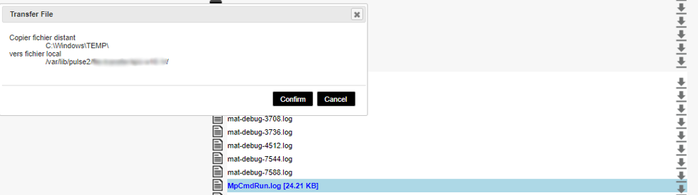
Une fois confirmé, la pop-up nous envoie le retour et nous donne les informations de stockage du fichier sur le serveur.
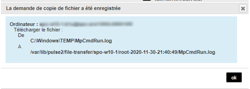
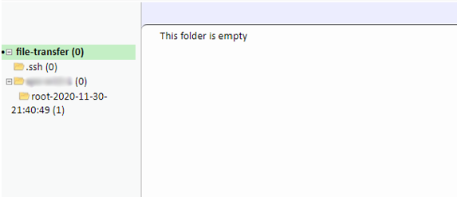
On peut ensuite dérouler l’arborescence pour voir notre fichier.
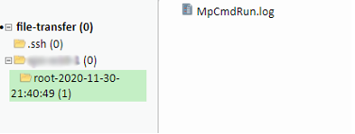
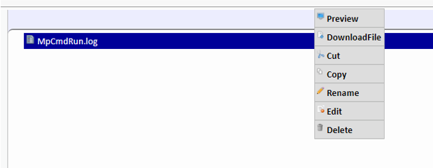
Actions Rapides (ou Quick Actions)¶
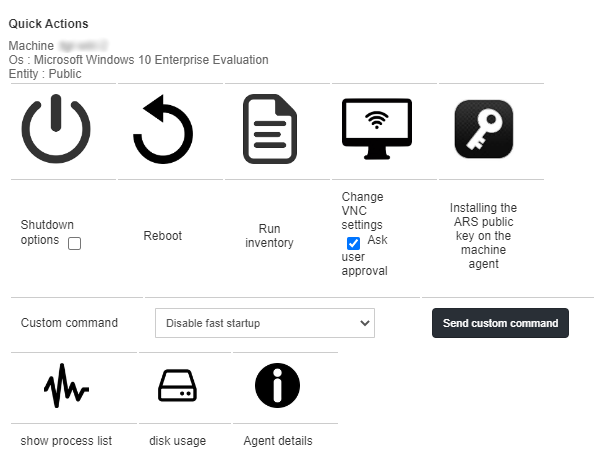
Comme exemple, voici un retour de la QA “Show process list” :
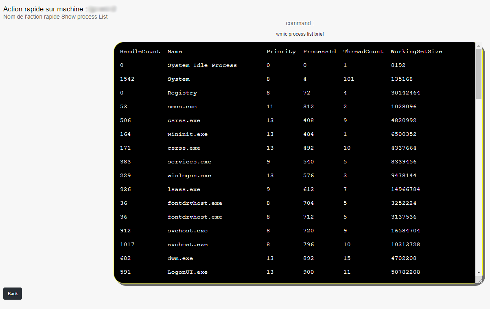
Supprimer un ordinateur¶
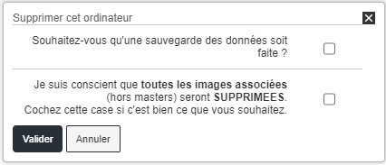